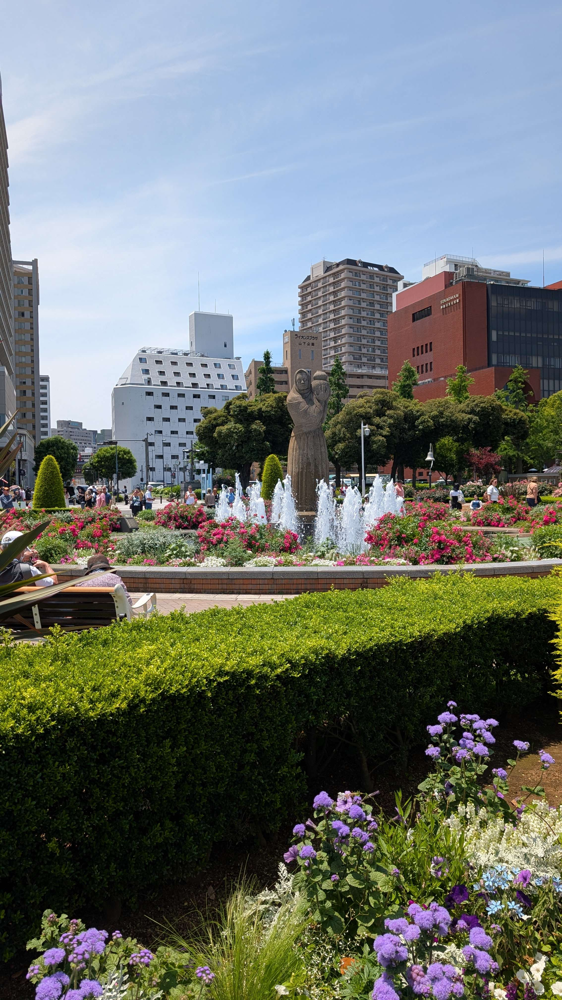
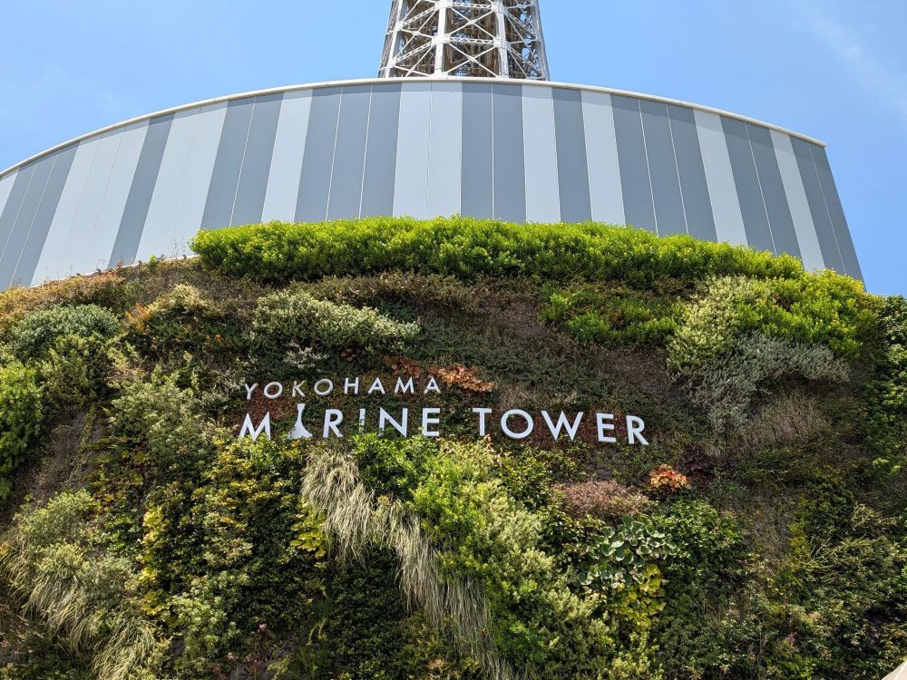
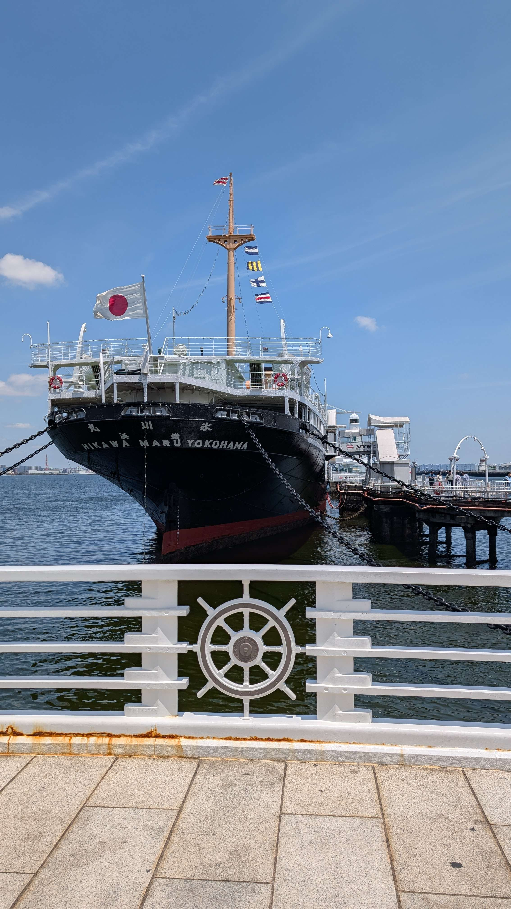
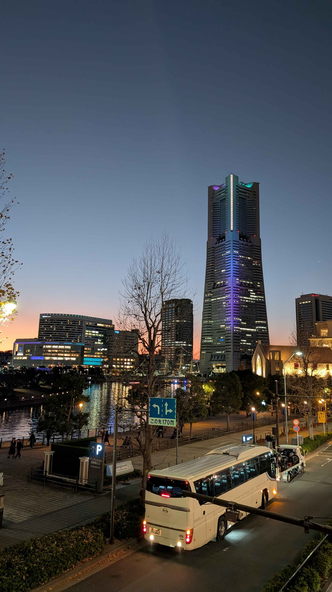

haru.s-ハル-のポートフォリオ
ポートフォリオ一覧 ▾
デザイン演習Ⅰ・Ⅱ
デジタル
ファブリケーション
まとめページ ▾
設計ファイル
ホーム
インタビュー
『前準備』
テーマ「わたしのみた昭和の横浜」
横浜出身のシニアの方にインタビューを行うための質問を考える
質問
・横浜と言ったらこれだ、というようなものはありますか？
・子供の頃や若い頃の休日はどのように過ごしていましたか？
・残っていてうれしい場所、逆になくなって寂しい場所などありますか？
・今までで印象に残っている出会いとかありますか？
・横浜という街を一言で例えると、どんな街だと思いますか？
   